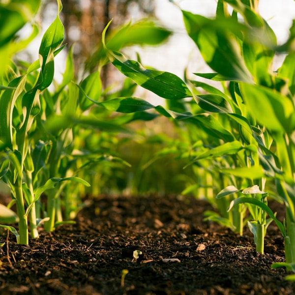
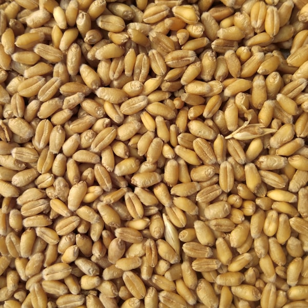
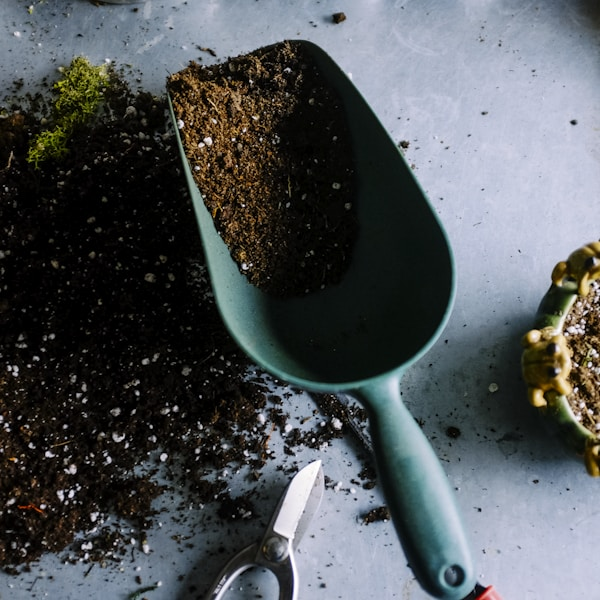

المستلزمات الزراعية
بذور محسّنة وأسمدة عضوية وكيماوية ومبيدات آمنة، تناسب مختلف المحاصيل والبيئات الزراعية في ليبيا والمنطقة.
- بذور خضروات وحبوب وفواكه
- أسمدة NPK ومغذيات نباتية
- مبيدات حشرية وفطرية وأعشاب
في أرض الخيرات الأولى نوفر تشكيلة متكاملة من البذور والأسمدة والمبيدات، إلى جانب المعدات الزراعية وقطع غيار الجرارات والآلات، بجودة عالية وأسعار تنافسية للمزارعين وتجار الجملة.
نختار موردين معتمدين لضمان جودة المنتجات وملاءمتها للظروف الزراعية المحلية.
نستورد ونوفر كل ما يحتاجه المزارع والتاجر من مستلزمات زراعية ومعدات وقطع غيار، مع التزام بالجودة والتوفر على مدار المواسم الزراعية.
بذور محسّنة وأسمدة عضوية وكيماوية ومبيدات آمنة، تناسب مختلف المحاصيل والبيئات الزراعية في ليبيا والمنطقة.
معدات حديثة تسهّل الزراعة والحصاد والري، من مضخات المياه إلى أدوات الحراثة والرش الزراعي.
قطع غيار أصلية وبديلة للجرارات والحصادات والمضخات، لضمان استمرارية العمل في المزارع دون توقف.
لمحة عن المستلزمات والمعدات الزراعية التي نوفرها للمزارعين وتجار الجملة.

محاصيل زراعية
بذور وحبوب جرارات ومعدات
جرارات ومعدات

أدوات زراعيةشركة أرض الخيرات الأولى متخصصة في استيراد وبيع المستلزمات الزراعية وقطع الغيار، وتخدم المزارعين وتجار الجملة والمحلات الزراعية بتشكيلات مختارة من موردين موثوقين حول العالم.
نؤمن بأن الإنتاج الزراعي الجيد يبدأ من توفير مستلزمات عالية الجودة بأسعار مناسبة، لذلك نحرص على مواكبة المواسم الزراعية وتلبية احتياجات السوق المحلي بسرعة وموثوقية.
إجابات سريعة عن أكثر الأسئلة تكرارًا حول شركة أرض الخيرات الأولى وخدماتها.
نحن شركة استيراد وبيع متخصصة في المستلزمات الزراعية، المعدات، وقطع الغيار، ونوفر للمزارعين وتجار الجملة منتجات موثوقة من موردين معتمدين.
نوفر بذورًا وأسمدة ومبيدات، معدات ري وزراعة، جرارات وآلات، بالإضافة إلى قطع غيار للمحركات والهيدروليك والإطارات وغيرها من احتياجات الصيانة.
نتعامل مع موردين معتمدين ونفحص المنتجات قبل الشحن، مع التأكد من مطابقة المواصفات وصلاحية البذور والأسمدة والمبيدات للاستخدام الزراعي.
نعم، نحدّث مخزوننا وفق مواسم الزراعة والحصاد، ونوفر البذور والأسمدة والمبيدات المناسبة لكل موسم زراعي.
بالتأكيد، نقدم أسعارًا خاصة لتجار الجملة والمحلات الزراعية، مع إمكانية تجهيز طلبيات كبيرة حسب احتياجات كل عميل.
يختلف الحد الأدنى حسب نوع المنتج والكمية المطلوبة، ويمكن مناقشة التفاصيل مباشرة مع فريق المبيعات لكل طلب.
للاستفسار عن المنتجات أو الأسعار أو التعاون التجاري، تواصلوا معنا عبر البيانات التالية.
اسم الشركة: شركة أرض الخيرات الأولى لاستيراد وبيع المستلزمات الزراعية وقطع الغيار
المدينة / الدولة: طرابلس، ليبيا
هاتف: +218919611077
واتساب: +218919611077
البريد الإلكتروني: info@ardalkhairat.ly
البريد الإلكتروني: abdoalabasi136@gmail.com